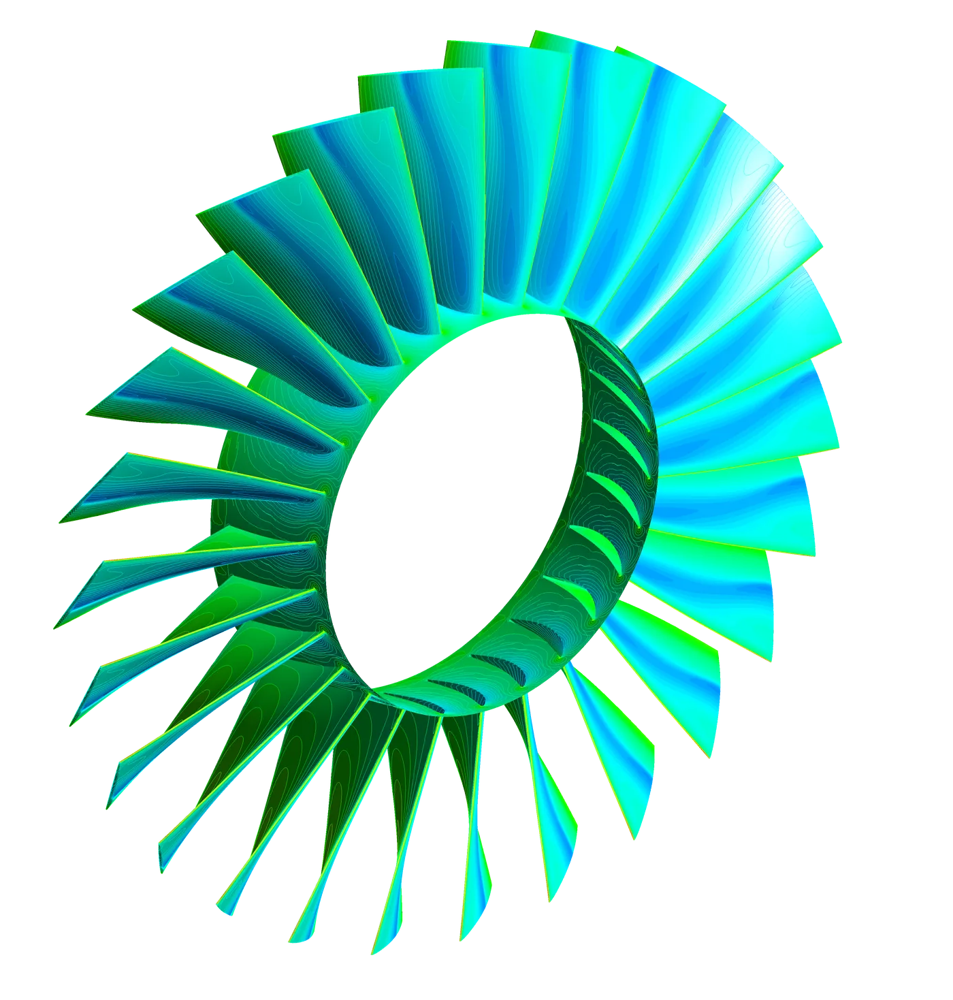

Target thrust
~80 N
Full-cycle design of a centrifugal-compressor turbojet targeting ~80 N thrust around a 65 mm rotor at ~120,000 RPM — from thermodynamic cycle analysis through CFD and structural/modal validation.
At this scale, blade heights on an axial compressor stage shrink to the point where tip-clearance losses dominate the efficiency budget — the clearance gap stops being a small correction and starts being a large fraction of blade span. A single-stage centrifugal compressor sidesteps that penalty and is the better choice below a certain size threshold; the selection here was made on quantitative tip-clearance-loss grounds rather than convention.
The engine was designed cycle-first: a full thermodynamic cycle analysis set the pressure ratio, mass flow and turbine inlet temperature targets needed to hit 80 N thrust. From there, meanline design in Vista TF sized the compressor and turbine stages, and BladeGen generated the 3D blade geometry consistent with that meanline solution.
Geometry moved into TurboGrid for structured turbomachinery meshing, then into the CFX / CFD-Post pipeline for full 3D flow solution and post-processing of the rotor and stator passages. The resulting flow-field and pressure loading fed a Static Structural and modal analysis pass to check the rotor against resonance and aeroelastic response at operating speed.

Outcome: a complete, independently executed turbomachinery design chain — thermodynamic cycle through blade geometry, CFD, and structural/modal validation — demonstrating the same workflow used on certified industrial turbomachinery, applied end-to-end on a self-directed project.